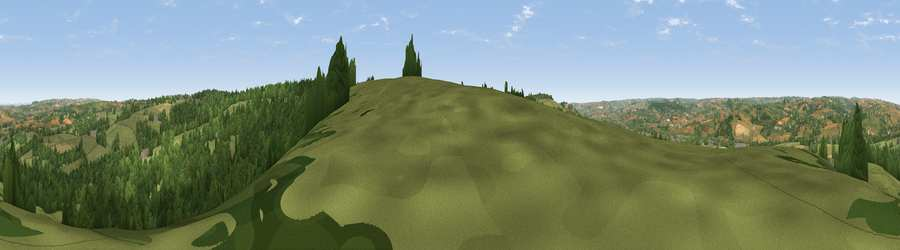

Viewpoint near Hawkchurch
#14269 in England · top 31% of its area beats it · near Hawkchurch · path 77 mWhere it is
The exact computed spot (SY 32625 98575). Click the marker for map links.
Public access: the nearest public right of way is about 77 m away — the final stretch may cross private land. Computed from Natural England's CRoW access layer and OpenStreetMap rights of way — not the legal definitive map. Always verify locally.
The view, rendered

A 360° render of this exact spot computed from the terrain model, tree cover and land cover — summer colours, afternoon light, calibrated against photographs of famous viewpoints. Real trees, hedges and buildings will differ in detail.
The panorama
Grey silhouette: terrain skyline in each direction (720 bearings, Earth curvature and refraction included). Dashed green: skyline with trees (+15 m) and buildings (+8 m) as obstacles. Blue strip: how far the ground is visible on each bearing.
Where the view opens
Wedge length = distance to the farthest visible ground on that bearing (vegetation-aware). Rings at 10, 25 and 50 km.
What fills the view
59% grassland · 33% woodland · 6% cropland · 2% built-up
Angular shares of the visible panorama (visual magnitude), not map area. Landscape diversity 0.40 (0–1 Shannon).
Key numbers
More beautiful places nearby
The staircase of upgrades: each row has a higher view potential than everything closer. Driving times are estimates from straight-line distance, calibrated against real road routing — check an actual route before setting out.
| Place | Direction | Drive | Score |
|---|---|---|---|
| Viewpoint near Hawkchurch | SE · 1 km | ~3 min | 62.0 |
| Lambert's Castle Hill | E · 4 km | ~10 min | 78.7 |
| Viewpoint near Lyme Regis | SSE · 6 km | ~12 min | 81.3 |
| Chardown Hill | SE · 9 km | ~17 min | 81.5 |
| Viewpoint near Burstock | ENE · 9 km | ~18 min | 81.8 |
| Viewpoint near Axmouth | SSW · 10 km | ~19 min | 82.4 |
| Golden Cap | SE · 10 km | ~20 min | 88.7 |
| The Knoll | ESE · 23 km | ~39 min | 91.0 |
50.78282, -2.95707 · source: screening · position refined by local search. Computed location — check access rights before visiting.